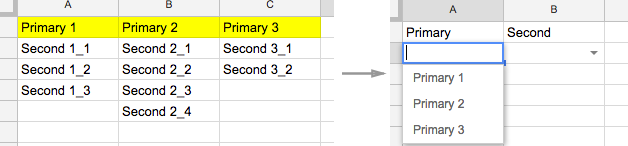
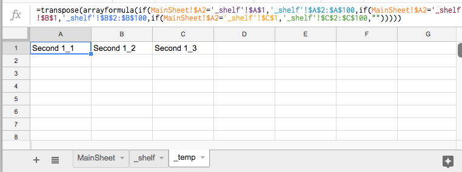

场景
所谓联动菜单，就是后一个下拉框的选项是根据前一个下拉框被选中的值来决定的。一个典型的应用就是省市联动菜单，选择省份之后，根据此决定市的选项。
设定选项层级
新建一张Sheet，命名为shelf, 将第一层级选项（Primary）作为第一行，第二层级选项（Second）作为各列细项，做出菜单项数据源表。

动态生成Second数据
新建一个临时文件表，命名为temp。在临时表中根据用户选择的Primary数据，动态生成一行Second数据，然后设置Second的数据源为对应的一行动态数据。
1.在temp表A1输入公式：
=transpose(arrayformula(if(MainSheet!$A2='_shelf'!$A$1,'_shelf'!$A$2:$A$100,if(MainSheet!$A2='_shelf'!$B$1,'_shelf'!$B$2:$B$100,if(MainSheet!$A2='_shelf'!$C$1,'_shelf'!$C$2:$C$100,"")))))

2.将A1的公式复制到整个A列。
设置Second的数据验证源
每一个Second单元格对应每一行temp表的数据源，在此利用脚本批量设置。
1.选择“工具-脚本编辑器”新建脚本文件，代码如下：
/* Validation+ Script copied from:
* https://productforums.google.com/forum/#!topic/docs/pBDeCGqzlMI
* @author AD:AM
*
*
* Example how to use this:
* 1. Input the proper data validation to the top-most cell of a vertical group
* of cells (ie. one columnd-wide; as many rows as you want).
* 2. Select the group of cells, making sure the top cell is the one with data
* validation.
* 3. Choose the Validation+ menu and click "Copy validation (relative rows,
* absolute columns)"
* Voila!
*/
/**
* Build menu on open
*/
function onOpen()
{
SpreadsheetApp.getActiveSpreadsheet().addMenu
(
"Validation+",
[
{name: "Copy validation (all relative references)", functionName: "copyValidation"},
{name: "Copy validation (relative rows, absolute columns)", functionName: "copyValidationColumnsAbsolute"},
{name: "Copy validation (absolute rows, relative columns)", functionName: "copyValidationRowsAbsolute"}
]
);
}
/**
* Copies the data validation from the top-left most cell of the current
* selection of cells to the remaining cells in the selection.
*
* 1. Apply "data validation" to the top-left cell of a group of cells
* 2. Select that group of cells
* 3. Choose the applicable Validation+ menu item
* 4. Done.
*/
function copyValidation(rowsAbsolute, columnsAbsolute)
{
var ss = SpreadsheetApp.getActiveSpreadsheet();
var r = ss.getActiveRange();
var dv = r.getDataValidations();
var dvt = dv[0][0].getCriteriaType();
if (dvt != SpreadsheetApp.DataValidationCriteria.VALUE_IN_RANGE) return;
var dvv = dv[0][0].getCriteriaValues();
for (var i = 0; i < dv.length; i++)
{
for (var j = i ? 0 : 1; j < dv[0].length; j++)
{
dv[i][j] = dv[0][0].copy().withCriteria(dvt, [dvv[0].offset(rowsAbsolute ? 0 : i, columnsAbsolute ? 0 : j), dvv[1]]).build();
}
}
r.setDataValidations(dv);
}
/**
* Copies data validation, keeping the rows absolute.
*/
function copyValidationRowsAbsolute()
{
copyValidation(true, false);
}
/**
* Copies data validation, keeping the columns absolute.
*/
function copyValidationColumnsAbsolute()
{
copyValidation(false, true);
}
2.保存后点击运行，授权新建脚本，回到表格可以看到菜单栏多出一个Validation+按钮。
3.设置好Second第一个单元格的数据源，之后全选本列（如果第一格是标题，需要排除掉），点击Validation+按钮下的Copy validation(relative rows, absolute columns)，复制本列第一个单元格的数据源设置。
搞定。